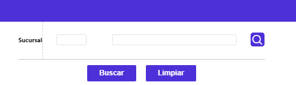
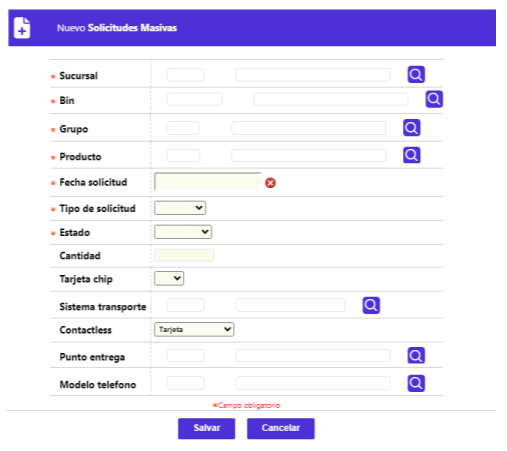
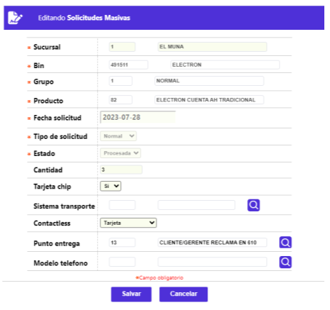

Solicitudes masivas
Mediante esta opción la entidad tiene la posibilidad de registrar en el sistema, las solicitudes de tarjetas débito no personalizadas con destino a las diferentes sucursales, con el fin de poder atender oportunamente las necesidades de sus clientes. El formulario cuenta con un filtro y los enlaces: Actualizar, Eliminar y Adicionar.

Descripción de campos
Sucursal |
Campo con lista de valores que permite seleccionar la sucursal de la entidad a la que pertenecen las solicitudes masivas que se desea consultar. |
Una vez seleccionada la sucursal, mediante el botón Buscar, en el bloque inferior del formulario, se muestran los registros que coincidan con la sucursal utilizada como criterio en el filtro.
Descripción de campos
Código |
Campo que muestra las sucursales de la entidad a las que pertenecen las diferentes solicitudes masivas. |
Descripción |
Campo que muestra las sucursales de la entidad a las que pertenecen las diferentes solicitudes masivas. |
|
Bin-grupo- producto |
Este campo despliega el producto débito que se está solicitando para la sucursal. |
|
Estado |
Campo mediante en el que se indica si la solicitud está Pendiente o si ya fue Procesada, en este último caso, indica que ya se generaron los números de tarjetas y enviaron a Plásticos a realzar o Realce chip, dependiendo de si a nivel de producto débito, se indica si el plástico del mismo lleva o no chip. |
Cantidad |
Campo que contiene la cantidad de tarjetas que por producto se solicitan para la sucursal. |
Fecha solicitud |
Campo en formato YYYY-MM-DD la fecha en la cual se registró en el sistema la solicitud masiva de tarjetas débito. |
Tipo de solicitud |
Campo que muestra si las tarjetas masivas solicitadas son de solo Consulta o Normal, esto es que permite realizar transacciones o utilizaciones. |
Tarjeta chip |
Campo en el que mediante un Si, ilustra que los plásticos solicitados llevan chip. En caso contrario queda en nulo. |
Sistema transporte |
Campo que si tiene dato, informa a cual de los Sistemas masivos de transporte público están vinculados los plásticos de la solicitud. |
Contactless |
Campo que si tiene dato, muestra el tipo de sistema a utilizar, esto es Tarjeta o Celular. |
Punto entrega |
Campo que puede contener el código del Punto de entrega de los plásticos de la solicitud. |
Modelo teléfono |
Campo que debe tener valor si en campo Contactless indica Celular. |
Adicionar: Al activar ese enlace, se despliega un nuevo formulario con los siguientes campos.

Descripción de campos
|
Sucursal |
Este campo obligatorio contiene lista de valores de la que se selecciona la sucursal que solicita o para la cual van dirigidos los plásticos a emitir masivamente. |
|
Bin |
Campo obligatorio en el que se puede ingresar o seleccionar de la lista de valores poblada en la opción producto débito el Bin para el que se van a solicitar y gestionar tarjetas no personalizadas. |
|
Grupo |
Campo obligatorio en el que se puede ingresar o seleccionar de la lista de valores poblada en la opción producto débito el Grupo para el que se van a solicitar y gestionar tarjetas no personalizadas. |
|
Producto |
Campo obligatorio en el que se puede ingresar o seleccionar de la lista de valores poblada en la opción producto débito el Producto para el que se van a solicitar y gestionar tarjetas no personalizadas. |
|
Fecha solicitud |
Campo obligatorio que, mediante funcionalidad de un calendario, permite indicar la fecha en la que se registra en el sistema, en formato AAAA-MM-DD, la solicitud masiva de tarjetas débito. |
|
Tipo de solicitud |
Campo obligatorio que posee lista de valores tipo combo de la que se debe seleccionar entre: Normal o Consulta, lo primero indica que permite realizar transacciones o utilizaciones, la segunda solo consulta. |
|
Estado |
Campo obligatorio que posee lista de valores tipo combo de la que se debe seleccionar entre: Procesada o Pendiente. |
|
Cantidad |
Campo no obligatorio que contiene la cantidad de tarjetas que por producto se solicitan para la sucursal. |
|
Tarjeta chip |
Campo obligatorio en el que se puede ingresar o seleccionar de la lista de valores poblada en la opción producto débito el Producto para el que se van a solicitar y gestionar tarjetas no personalizadas. |
|
Sistema transporteTarjeta chip |
Campo no obligatorio en el que se puede ingresar o seleccionar de la lista de valores poblada en la opción Sistemas masivos de transporte público aquel al que puedan estar vinculados los plásticos de la solicitud. |
|
Contactless |
Campo no obligatorio que posee lista de valores tipo combo de la que puede seleccionarse entre: Tarjeta, Celular micro SD o Celular simcard. |
|
Punto entrega |
Campo no obligatorio en el que se puede ingresar o seleccionar de la lista de valores poblada en la opción Punto de entrega asociado a los plásticos de la solicitud. |
|
Modelo teléfono |
Campo que posee lista de valores de la que debe seleccionarse aquel que corresponda y esté relacionado con el Contactless. |
Las solicitudes aquí registradas se gestionan a través de la opción Ejecución de procesos del submódulo Débito.
Actualizar: Al activar ese enlace, se despliega un nuevo formulario en el que ninguno de sus campos es modificable.
